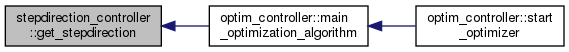

The stepdirection_controller class provides different methods for finding the step-direction, as gradient descent and non-linear conjugate gradient (NCG) schemes with different update rules; see e.g. https://www.caam.rice.edu/~yzhang/caam554/pdf/cgsurvey.pdf. More...
#include <stepdirection_controller.h>
Public Member Functions | |
| stepdirection_controller (const char *filename) | |
| arma::mat | get_stepdirection (arma::mat gradient, arma::mat gradient_old, arma::mat stepdirectionOld, unsigned int optimization_iteration) |
| get_stepdirection is a generic method called in the main optimizer algorithm More... | |
 Public Member Functions inherited from abstract_controller Public Member Functions inherited from abstract_controller | |
| data_provider | getData_provider_optim () const |
| void | setData_provider_optim (const data_provider &value) |
Detailed Description
The stepdirection_controller class provides different methods for finding the step-direction, as gradient descent and non-linear conjugate gradient (NCG) schemes with different update rules; see e.g. https://www.caam.rice.edu/~yzhang/caam554/pdf/cgsurvey.pdf.
Member Function Documentation
◆ get_stepdirection()
| arma::mat stepdirection_controller::get_stepdirection | ( | arma::mat | gradient, |
| arma::mat | gradient_old, | ||
| arma::mat | stepdirectionOld, | ||
| unsigned int | optimization_iteration | ||
| ) |
get_stepdirection is a generic method called in the main optimizer algorithm
- Parameters
-
gradient gradient_old stepdirectionOld optimization_iteration
- Returns
References inner_products::H1_inner_product(), and inner_products::H2_inner_product().
Here is the call graph for this function:

Here is the caller graph for this function:

The documentation for this class was generated from the following files:
- /home/jan/Promotion_linuxPC/Optim_VSTRAP/src/optimization/stepdirection_controller.h
- /home/jan/Promotion_linuxPC/Optim_VSTRAP/src/optimization/stepdirection_controller.cpp